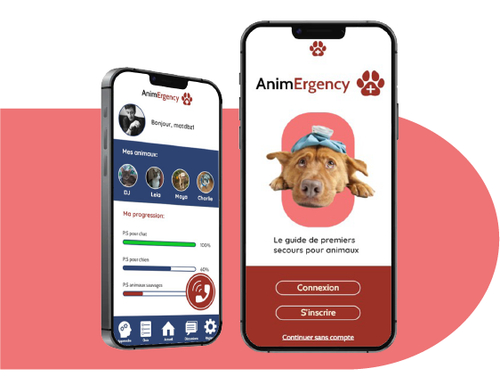
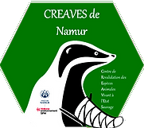

Le meilleur moyen de les aider, c'est de savoir comment!
AnimErgency est un guide complet et gratuit pour prendre soin de nos animaux bien-aimés. Qu’il s’agisse d’un animal domestique ou sauvage, savoir agir fait toute la différence : apprenez donc comment apporter une aide précieuse à ces animaux en détresse.
Commencer l'expérience
Etant passionné des animaux depuis mon plus jeune âge, j’ai décidé de consacrer mon TFA à leur bien-être. En effet, c’est lorsque je me rappelais de tous les animaux blessés que l’on trouve aux bords des routes, qu’une vague idée de projet m’est venue. Je ne savais pas encore comment m’y prendre, ni si mon idée était bonne ou pas. Tout ce que je voulais, c’était de venir en aide à ces animaux dans le besoin, d’une quelconque façon.
Rencontres
Pour commencer mon travail, je souhaitais me tourner vers une association qui aurait comme objectif principal de soigner des animaux. C’est là que j’ai découvert le CREAVES de Namur, une ASBL spécialisée dans la revalidation des espèces animales vivant à l’état sauvage.

Le CREAVES de Namur est une ASBL qui prend en charge temporairement et gratuitement les animaux qui se retrouvent blessés ou malades. Le seul but étant de prodiguer les soins nécessaires avant la remise en liberté sur le lieu de la découverte lorsque c’est possible.
Le CREAVES de Namur est une ASBL qui prend en charge temporairement et gratuitement les animaux qui se retrouvent blessés ou malades. Le seul but étant de prodiguer les soins nécessaires avant la remise en liberté sur le lieu de la découverte lorsque c’est possible.
Lien vers reste d'infos
Solutions
Après beaucoup de réflexion, j’ai fini par trouver 3 potentielles solutions
- Réaliser un guide imprimé
- Groupes de discussion:
- Formation en ligne:
Solution choisie
Ayant chacune leurs points forts et points faibles, j’ai opté pour la solution qui pourrait être la plus complète et offrant la meilleure expérience utilisateur: la formation en ligne.
Lien vers reste d'infos
Fonctionalités
Dans le but de mener à bien mon projet, il y aura une fonctionnalité principale et plusieurs fonctionnalités secondaires.
Fonctionnalité apprentissage
Lien vers reste d'infos
Présentation TFA
Voici la vidéo du déroulement de mon projet
Lien vers reste d'infos
Conclusion
Avec la création de cette formation/ guide, j’espère pouvoir venir en aide à toutes ces personnes qui se trouvent dans une situation d’urgence avec un animal et qui ne savent pas comment réagir, mais aussi, à tous les animaux qui pourraient avoir besoin d’aide.